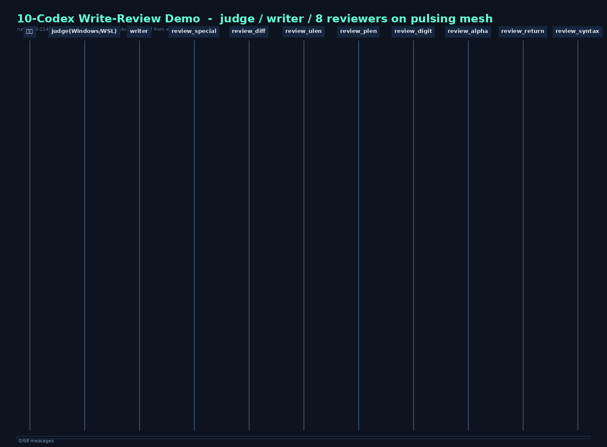

| 时刻 | 事件 |
|---|---|
| 15:47:17 | judge 收到任务，10 节点组网完成 |
| 15:47:34 | judge → writer：派单（任务原文一字不改转发） |
| 15:47:44 | writer 交回 validate() 函数稿 → 系统登记底稿 → fanout 同刻群发 8 家审查店 |
| 15:47:5x | 6 家 CLEAN · review_special / review_diff 抓漏：缺"特殊字符检查"与"密码≠用户名" |
| 15:48:53 | judge → writer：汇总打回（每轮唯一一封，防刷屏纪律） |
| 15:49:30 | writer 交修正稿 → 二次 fanout 复审 |
| 15:51 | 收尾（本轮在最终汇报时遇模型调用悬挂，进程硬退出——通信层 29/29 审计满分） |
git clone -b demo_review https://github.com/Damon6666/codex.git cd codex/pulsing-demo/demo10 export ZHIPU_API_KEY=<你的key> ./run.sh # 自动: 环境自检→网关→10 codex→时序图→22项通信审计